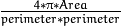

Feature detectors in OpenCV have wrappers with a common interface that enables you to easily switch between different algorithms solving the same problem. All objects that implement keypoint detectors inherit the FeatureDetector interface.
Note
Abstract base class for 2D image feature detectors.
class CV_EXPORTS FeatureDetector
{
public:
virtual ~FeatureDetector();
void detect( InputArray image, vector<KeyPoint>& keypoints,
InputArray mask=noArray() ) const;
void detect( InputArrayOfArrays images,
vector<vector<KeyPoint> >& keypoints,
InputArrayOfArrays masks=noArray() ) const;
virtual void read(const FileNode&);
virtual void write(FileStorage&) const;
static Ptr<FeatureDetector> create( const String& detectorType );
protected:
...
};
Detects keypoints in an image (first variant) or image set (second variant).
| Parameters: |
|
|---|
Wrapping class for feature detection using the FAST() method.
class FastFeatureDetector : public Feature2D
{
public:
static Ptr<FastFeatureDetector> create( int threshold=1, bool nonmaxSuppression=true, type=FastFeatureDetector::TYPE_9_16 );
};
Wrapping class for feature detection using the goodFeaturesToTrack() function.
class GFTTDetector : public Feature2D
{
public:
enum { USE_HARRIS_DETECTOR=10000 };
static Ptr<GFTTDetector> create( int maxCorners=1000, double qualityLevel=0.01,
double minDistance=1, int blockSize=3,
bool useHarrisDetector=false, double k=0.04 );
};
Maximally stable region detector
class MSER : public Feature2D
{
public:
enum
{
DELTA=10000, MIN_AREA=10001, MAX_AREA=10002, PASS2_ONLY=10003,
MAX_EVOLUTION=10004, AREA_THRESHOLD=10005,
MIN_MARGIN=10006, EDGE_BLUR_SIZE=10007
};
//! the full constructor
static Ptr<MSER> create( int _delta=5, int _min_area=60, int _max_area=14400,
double _max_variation=0.25, double _min_diversity=.2,
int _max_evolution=200, double _area_threshold=1.01,
double _min_margin=0.003, int _edge_blur_size=5 );
virtual void detectRegions( InputArray image,
std::vector<std::vector<Point> >& msers,
std::vector<Rect>& bboxes ) = 0;
};
Class for extracting blobs from an image.
class SimpleBlobDetector : public FeatureDetector
{
public:
struct Params
{
Params();
float thresholdStep;
float minThreshold;
float maxThreshold;
size_t minRepeatability;
float minDistBetweenBlobs;
bool filterByColor;
uchar blobColor;
bool filterByArea;
float minArea, maxArea;
bool filterByCircularity;
float minCircularity, maxCircularity;
bool filterByInertia;
float minInertiaRatio, maxInertiaRatio;
bool filterByConvexity;
float minConvexity, maxConvexity;
};
static Ptr<SimpleBlobDetector> create(const SimpleBlobDetector::Params
¶meters = SimpleBlobDetector::Params());
};
The class implements a simple algorithm for extracting blobs from an image:
This class performs several filtrations of returned blobs. You should set filterBy* to true/false to turn on/off corresponding filtration. Available filtrations:
- By color. This filter compares the intensity of a binary image at the center of a blob to blobColor. If they differ, the blob is filtered out. Use blobColor = 0 to extract dark blobs and blobColor = 255 to extract light blobs.
- By area. Extracted blobs have an area between minArea (inclusive) and maxArea (exclusive).
- By circularity. Extracted blobs have circularity () between minCircularity (inclusive) and maxCircularity (exclusive).
- By ratio of the minimum inertia to maximum inertia. Extracted blobs have this ratio between minInertiaRatio (inclusive) and maxInertiaRatio (exclusive).
- By convexity. Extracted blobs have convexity (area / area of blob convex hull) between minConvexity (inclusive) and maxConvexity (exclusive).
Default values of parameters are tuned to extract dark circular blobs.